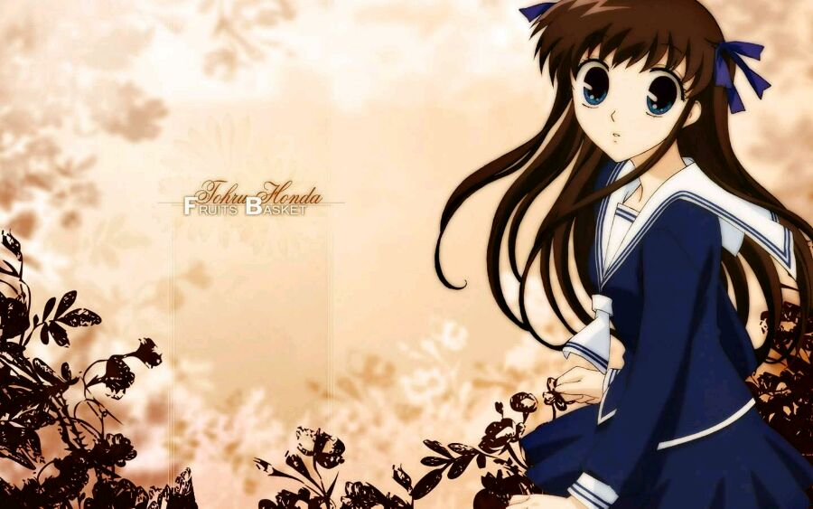

水果篮子

交配类型：兽交
《水果篮子》（日语：フルーツバスケット）是日本漫画家高屋奈月创作的日本漫画作品。于白泉社的双周刊《花与梦》，连载期间8年又4个月，单行本全23卷，全球销量达3000万册，吉尼斯世界纪录上最畅销的日本少女漫画之一。2015年9月4日开始，后传作品的次世代篇《幻影天使another》开始于花与梦官方网站上连载[1]。曾被改编制作成电视动画和2009年上演舞台剧。
电视动画方面，2001年7月至12月在东京电视台播出，由STUDIO DEEN制作。2018年11月20日宣布再度电视动画化[2][3][4]，于2019年4月5日在东京电视台播放，由TMS Entertainment制作。
剧情简介
积极开朗又有些“脱线”的高中女生本田透由于相依为命的妈妈意外车祸离世，被好心的爷爷收养。但是由于姑姑也要到爷爷家住，爷爷家的房子要改建，小透只好以到朋友家住的名义暂时在森林里搭起了帐篷住了下来，就是在这片草摩家的森林里，小透重新结识了班里的英俊“王子”草摩由希，也接触到了草摩家的秘密。由于被诅咒的命运，草摩家的人过着痛苦的生活，每个人都有伤心的往事，积极又乐观的小透的出现给草摩家带来了笑容和希望。
推荐理由